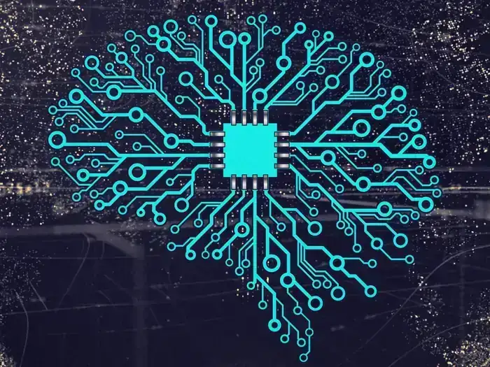
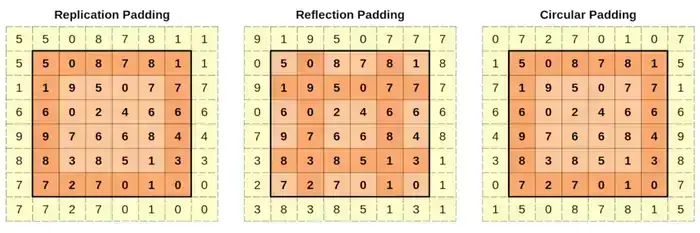
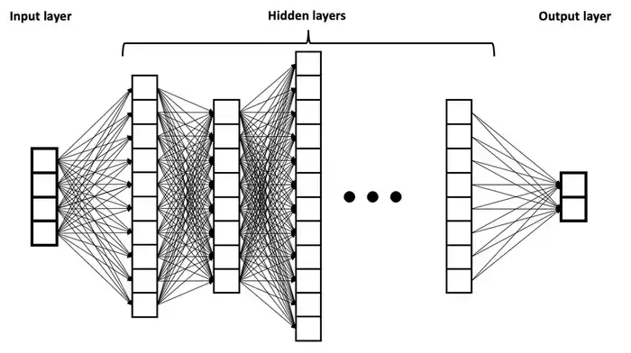

The proposal
Whole brain emulation is the proposal that a mind could be copied by scanning a brain at cellular or molecular resolution, reconstructing its connectivity and dynamics, and running the result on a computer. Anders Sandberg and Nick Bostrom published a technical roadmap in 2008 that treated it as an engineering problem with staged milestones: fixed tissue, then slice, then whole brain, then validation by behaviour.
Maps, diagrams and images






The scan resolution required is the hard number. A complete connectome has been mapped for a nematode with 302 neurons; the fruit fly's is approaching completion; a human brain has around 86 billion neurons and roughly 100 trillion synapses, with molecular detail that no current method can capture in a living or preserved brain.
The philosophical problem
Even a perfect emulation raises the question of whether it is the same person or a copy that believes it is. The proposal is usually framed as copying, and copying is not survival — which is a problem for the sales pitch, not for the engineering.
Documented: connectomes for small organisms; serious engineering roadmaps.
Not achieved: a scan of any mammalian brain at the required resolution.
Not demonstrated: that an emulation would be conscious, or would be the person.
Contested: whether the required resolution is even physically achievable in preserved tissue.
The honest label: fringe — an engineering programme with no working example and an unresolved identity problem.
Why it is in the archive
Because it is the archive's clearest case of a claim whose difficulty is always presented as technical, when the part that cannot be tested is the part that matters most.
Open resources on this topic
- PapersOpen-access articles: DOAJ · PubMed Central · Internet Archive Scholar
- BooksPublic-domain and borrowable copies: Open Library · Project Gutenberg · Google Books · Internet Archive
Cite this page
Momin, S. (2026). Mind Uploading. The Larger World Archive. https://drsamonline.github.io/LARGE_GLOBE/mind-uploading.htmlMomin, Sohil. “Mind Uploading.” The Larger World Archive, 2026, https://drsamonline.github.io/LARGE_GLOBE/mind-uploading.html.Momin, Sohil. “Mind Uploading.” The Larger World Archive, 2026. https://drsamonline.github.io/LARGE_GLOBE/mind-uploading.html.@misc{mind2026mind,
author = {Momin, Sohil},
title = {Mind Uploading},
year = {2026},
howpublished = {The Larger World Archive},
url = {https://drsamonline.github.io/LARGE_GLOBE/mind-uploading.html},
note = {Last reviewed 20 November 2026}
}Last reviewed 20 November 2026 · Corrections policy · this page is not peer reviewed
Sources for this page
- Wikipedia, “Mind uploading” — the proposal and its problemsen.wikipedia.org
- Wikipedia, “Connectome” — what has actually been mappeden.wikipedia.org
- Wikipedia, “Whole brain emulation” — the technical roadmapen.wikipedia.org
- Wikipedia, “Transhumanism” — the movement the claim belongs toen.wikipedia.org
- Archive.org — Sandberg and Bostrom, Whole Brain Emulation: A Roadmap (2008)archive.org/details/whole-brain-emulation-a-roadmap-2008